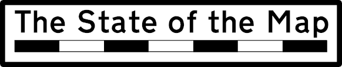
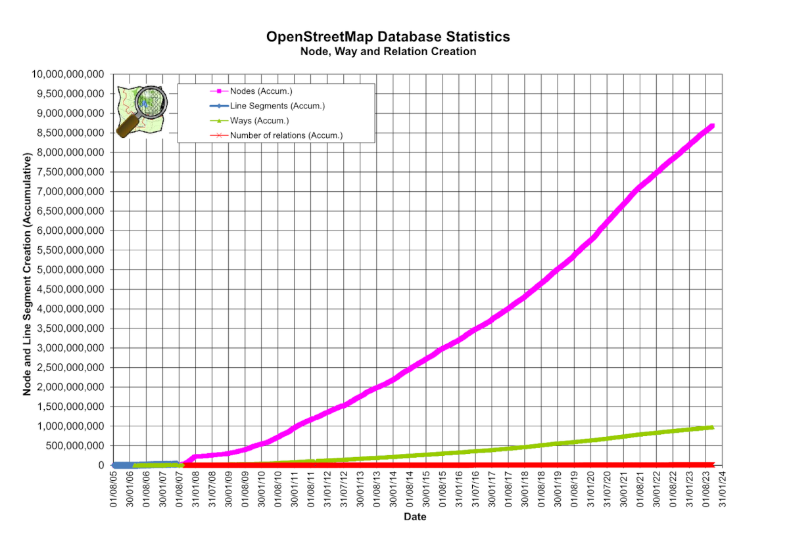

Founded: 2004
by Steve Coast in the UK
Milestones: 2006
OpenStreetMap Foundation was registered in the UK
Milestones: 2007
First international conference “State Of The Map” was held in Manchester
Milestones: 2008
20 million ways and 200 million nodes
Milestones: 2010
Use Bing aerial imagery (Microsoft) to make OSM changes

Milestones: 2012
- 1 million registered users
- Switch from Creative Commons License to Open Database License (ODbL)
Milestones: 2023
Over 10 million registered users
OSM Data Model
3 element types
- nodes: points in space
- ways: linear and area features
- relations: relationships between nodes and/or ways
properties: a unique Id, a list of key-value Tags, a Version, Timestamp, User Id, and Changeset Id.
OSM Data Model: nodes
- Single points in space defined by their latitude, longitude and node id.
- Used for points of interest and other point-shaped objects like shops, individual trees or traffic lights.
- example: charging station
OSM Data Model: ways
- Ordered list of nodes
- Used for linear-shaped objects like roads and smaller rivers.
- example: residential road
OSM Data Model: areas
- Ways are also used for polygon-shaped objects like buildings and landuse areas when the way is closed.
- example: Hogent Campus Mercator, Gebouw J
OSM Data Model: closed ways
- Note that closed ways occasionally represent loops, such as roundabouts on highways or barrier-like structures, rather than solid areas
- example: fence
OSM Data Model: relation
- Describes a relationship between two or more data elements: nodes, ways or other relations:
- Used for “everything else”, i. e. more complex geometric objects like multipolygons and turn restrictions.
- example: Only Right Turn Restriction
OSM Data Model: tags
- Add an explicit meaning to a particular element
- Any OSM element: #tags >= 0, no upper limit
- Top-level/primary/feature tags vs additional/secondary tags: Map Features
OSM model vs GIS “Simple Features” data model
- Most Geographic Information Systems (GIS) operate on a different data model than OSM
- OSM data is frequently used in these systems (e.g. QGIS): crucial to convert between the models.
- Zero-, one-, and two-dimensional objects:
- Point
- LineString
- Polygon
- see Simple Features standard
OSM Data Model: some stats
Date: 2025-04-08
- nodes: 9 837 243 484
- ways: 1 096 667 017
- relations: 13 216 182
Issues with the OSM data model
- Varying level of detail
- ID stability
- Building a navigation graph
- ...
OSM specifications
- OSM has a completely free data model (you don't need anyone's permission)
- But: the community tries to moderate the list of primary map features
- It serves as a landing page for newbies
- Avoid duplicates
- Prevent uncontrolled explosion of tags
- Official Proposal Process
Mapmaking: Map Editing software
- iD: the default map editor on openstreetmap.org
- Rapid: an extended version of iD (fork), created and maintained by Meta, focusing on improving speed and efficiency while map editing: e.g. there’s functionality to add missing roads that were generated using AI.
- JOSM: Java-based non-web based, advanced features, not present in iD
Mapmaking: Other notable software
- MapRoulette: microtask platform, tasks are group in challenges
- OSMCha: OSM Changeset analyzer
- Overpass Turbo: query and show OSM data on an interactive map
- Taginfo: collects information about tags from several sources to help you understand what they mean and how they are used.
- Ohsome: easy access to OSM history
Mapmaking: OSM data extracts
- Planet files:weekly “planet” files are made available, these are full dumps of the OSM database.
- different formats:
xmlandpbf- xml: human readable
- pbf: custom binary format, based upon Google’s Protocol Buffer binary encoding format
- pbf is highly compressed, the weekly dump file is about
80Gin size (as opposed to149Gforbz2compressed XML) - There are special tools available to export data from a pbf file
Mapmaking: OSM data extracts
Regional extracts: Geofabrik Download Server
Mapmaking: OSM data extracts
Changesets: Change file formats
- Multiple formats to describe the differences between 2 datasets (e.g. 2 planet pbfs), most common is the osmChange format, it’s a human readable (xml)
- These osmChange files (extension
.osc) are published regularly (minutely, hourly, daily) - Tooling is available to “apply” the changesets on top of an existing pbf, in order to obtain a new pbf